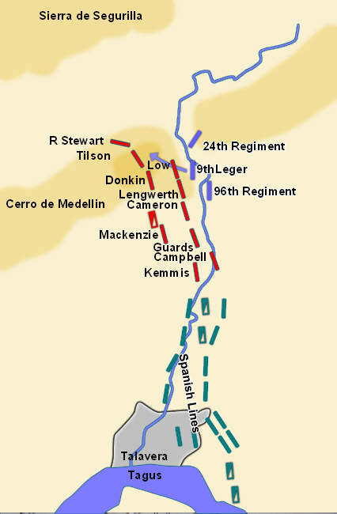
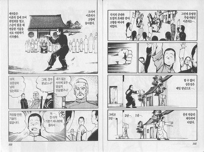
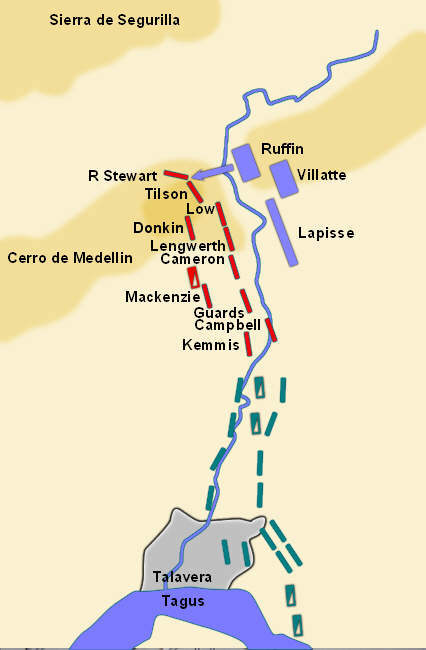
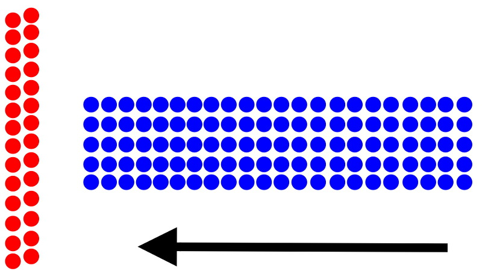

반보붕권 타편천하 - 탈라베라 전투 (제4편)
게시: 2018-03-17T08:42:21+09:00
프랑스군 1개 연대 약 1600명이 메데진 언덕으로 달려들 때 이 언덕을 지키고 있던 영국군 KGL 여단의 규모는 고작 1200명 정도였습니다. 더군다나 야습을 예상하지 못하고 자다 일어난 판국이라 KGL 여단은 강한 저항을 하지 못하고 밀려나야 했습니다. 하지만 기세를 올린 프랑스군이 메데진 언덕의 정상 능선을 점령하고 기쁨의 함성을 올리고나자, 영국군의 진짜 반격이 시작되었습니다. 프랑스군에게는 보이지 않았던 능선 바로 너머 후사면에 영국군 2개 여단 약 3800명 정도가 대기하고 있다가 반격에 나선 것이었습니다. 사실 이 2개 여단도 야습은 예상하지 못하고 능선에서 멀찍이 떨어진 뒤쪽 경사면에서 야영을 하다, 능선 너머에서 벌어진 총격전 소리에 화들짝 놀라 허겁지겁 뛰어온 것이었습니다. 그래도 영국군이 언덕 능선 뒤에 숨어있다가 들이칠 줄은 몰랐던 프랑스군을 몰아내고 다시 언덕을 탈환하는데는 충분했습니다.

(7월 27일 밤, 프랑스군의 첫번째 공격 상황도입니다.)
이렇게 언덕 후사면에 병력을 감추어 뒀다 언덕을 힘들게 올라온 적군을 능선 정상에서 반격하는 수비 전법이 바로 웰슬리의 주특기였습니다. 알고 보면 주특기라기보다는, 이것이 웰슬리가 제대로 갈고 닦은 유일한 필살기였습니다. 웰슬리는 어디서 이런 못된 전술을 배워왔는지, 바로 1년 전 비메이루(Vimeiro) 전투에서도 같은 방식으로 쥐노(Junot)의 프랑스군을 격파한 적이 있었지요. 뿐만 아닙니다. 그는 부사쿠(Bussaco) 전투 등 이후 전투에서도 똑같은 전법으로 프랑스군을 상대했고, 종국엔 워털루 전투에서 이 전술로 나폴레옹 본인까지도 격파하는 위엄을 보여주었습니다. 웰슬리는 나중에 '전투란 능선 너머에 무엇이 존재하는지 예측하는 것'이라는 말을 남겼는데, 항공 정찰이 없던 시절에는 낮은 능선이라고 할지라도 그 뒤에서 어느 정도의 예비 병력이 어디로 움직이는지 알 방법이 없었으므로 능선이라는 지형은 방어전에 매우 유용했습니다. 다만 이 전술은 어디까지나 수비용이었을 뿐, 결코 공격용은 아니었습니다. 웰슬리는 어떻게 그런 반쪽짜리 전술 하나만으로 역사에 길이 남을 명장이 될 수 있었을까요 ?

(제가 군대있을 때 아마 저 '권법소년'이라는 만화를 보고 너무나 깊은 감명을 받아 저도 형의권의 대가가 되겠다고 형의권 교본까지 교보문고에서 샀었습니다. 아... 그 책은 지금 어디로 사라졌을까요 ? 책장을 아무리 뒤져봐도 없네요.)
청나라 말기 형의권의 대가로 유명했던 곽운심이라는 권법가가 있습니다. 이 사람은 형의권을 배우기 시작할 때 배움이 느리고 서툴러, 형의권의 기본기 중 반걸음 내딛으며 주먹을 지르는 기본기 중 기본기인 붕권만 3년 동안 연마했답니다. 그런데 워낙 철저하게 수련하다보니, 이 단순한 붕권 하나만으로 모든 상대를 꺾는 기염을 토했습니다. 그래서 나온 말이 반보붕권 타편천하(半步崩拳 打遍天下)라고 하지요. 웰슬리가 즐겨 썼던 이 전술을 영어로 reverse slope defense 즉 후사면 방어라고 하는데, 이는 무척 단순하고 뻔한 전술이었습니다. 그러나 웰슬리는 이 단순한 전술의 효과를 극대화하기 위해 온갖 노력을 했습니다. 그는 이 전법에 꼭 맞는 언덕을 찾아 느림보 영국군을 끌고 수없이 전진과 후진을 반복했고, 이 전법을 쓸 수 없는 곳에서는 굴욕과 비난을 감내하고 후퇴도 마다하지 않았습니다. 또 그에겐 이런 전술을 원하는 대로 쓸 수 있도록 해주는 영국군 특유의 풍부한 보급망이 있었습니다. 나폴레옹 본인을 포함한 프랑스군의 기라성같은 장군들은 웰슬리의 이 얄미운 전술에 대한 효과적인 파해법을 끝내 찾지 못했습니다. 탈라베라 전투에서 이 전술에 당한 빅토르 원수도 결국 1812년 베레지나(Beresina) 전투에서 러시아군을 상대로 동일한 수법을 써서 효과를 봤다고 하니, 그야말로 반보붕권 타편천하라는 말이 딱 어울린다고 할 수 있습니다.
이날밤의 큰 전투는 이렇게 프랑스군의 패퇴로 마무리되었지만, 호되게 놀란 영국군은 프랑스군이 어둠을 타고 또 쳐들어올지 몰라 전전긍긍하며 뜬 눈으로 밤을 새워야 했습니다. 또 그들이 비웃었던 스페인군처럼, 영국군 초병들도 겁에 질려 어둠 속에서 헛것을 보고 허위 경보를 울려 여러 차례 비상이 걸리기도 했습니다.
한편, 프랑스군 측도 긴장이 팽팽했습니다. 빅토르가 우려하던 일, 즉 아직 영국군과 대치 중인 상황에서 조제프 국왕과 주르당 원수가 이끄는 프랑스군 본대가 도착하는 일이 벌어진 것입니다. 결국 한밤중에 세바스티아니까지 참석한 프랑스군 수뇌부 회의가 열렸습니다. 여기서 주르당은 빅토르에게는 한마디로 말도 안되는 쓰레기같은 전술을 제안했습니다. 그냥 제자리를 지키고 수비를 하며 시간을 때우자는 것이었습니다 ! 세상에, 나폴레옹의 프랑스군이 수비를 하다니 ! 그것도 이런 야전에서, 병력 수도 비슷한 상황에서 수비라니 ! 나폴레옹이 현장에 있었다면 기가 막혀 얼굴이 하얗게 질릴 만한 제안이었습니다.
하지만 주르당의 설명은 나름 설득력이 있는 것이었습니다. 술트의 제2 군단이 북쪽에서 탈라베라를 향해 내려오고 있다는 것이었습니다. 따라서 이렇게 웰슬리의 연합군과 대치한 상태로 며칠 더 버티면, 술트까지 가세하여 손쉽게 웰슬리를 격파할 수 있다는 것이었습니다. 아마도 그 전에 상황을 파악한 웰슬리가 꽁무니를 내빼겠지만 그것도 나쁘지 않았습니다. 피 한방울 흘리지 않고 적을 격퇴한 셈이 되니까요. 그러나 가장 목소리가 큰 사람은 빅토르였습니다. 그는 전투의 목표는 적 병력의 궤멸이며, 적을 물러나게 하는 것만으로는 전쟁에서 이길 수 없다고 주장하며 조제프 국왕이 금지하지 않는다면 자신의 군단 전체를 동원하여 영국군을 새벽에 들이치겠다고 선포했습니다. 이런 패기 앞에서 조제프는 물론이고 주르당까지도 머뭇거릴 수 밖에 없었고, 결국 빅토르는 새벽 무렵 두번째 공격을 개시했습니다.
빅토르의 두번째 공격도 전면적 총공격은 아니었습니다. 그는 메데진 언덕만 탈취하면 영국군을 격파할 수 있다는 생각에 휘하 3개 사단 중 루팽(Ruffin)의 1개 사단 약 5천명만 동원했고, 이들을 긴 영국군 방어선 중 일부에 집중시켜 구멍을 뚫으려 했습니다. 그래서 그는 루팽 사단의 3개 연대를 각각 긴 종대로 편성하여 3개의 송곳 형태로 다시 메데진 언덕에 돌격시켰습니다. 루팽 사단에 딸린 8문의 대포로 편성된 포병대가 사전 지원 사격을 해줬는데, 별 도움은 되지 않았습니다. 프랑스군에게 노출된 메데진 언덕 동쪽 사면에는 영국군이 거의 눈에 띄지 않았기 때문이었습니다. 덕분에 이번에도 이들은 언덕의 능선 바로 코 앞까지는 별다른 저항을 받지 않고 진격했습니다.

(7월 28일 새벽의 프랑스군 제2차 전투 상황입니다.)
문제는 이들이 능선 약 90m 앞까지 전진했을 때 발생했습니다. 프랑스군의 포격을 피해 능선 뒤에 숨어있던 힐(Hill) 장군 휘하 영국군 1개 사단 4천명이 긴 횡대로 일제히 튀어나와 위력적인 일제 사격을 퍼부은 것입니다. 오르막길을 향해 헉헉거리며 올리가던 프랑스군의 3개 종대 앞 부분에 집중된 4천발의 머스켓볼은 대단한 위력을 발휘했습니다. 종대 앞부분에 있던 프랑스군은 대부분 쓰려졌고, 덕분에 진격이 순간적으로 멈춰버렸습니다. 게다가 영국군은 다른 것은 몰라도 머스켓 연사 속도에서 유럽 최고 수준을 자랑했습니다. 이들은 신속하게 머스켓 소총을 재장전하여 머뭇거리는 프랑스군 3개 종대의 앞부분과 옆부분에 다시 4천발의 일제 사격을 퍼부었고 프랑스군 측에서는 비명소리가 울려퍼졌습니다. 이에 비해 프랑스군은 돌격을 위한 좁고 긴 종대로 편성되어 있었으므로 대응 사격이 여의치 않았습니다.

(영국군의 thin red line과 프랑스군의 thick blue column의 충돌은 스페인 전역 내내 반복되던 일입니다.)
이때 루팽 장군은 사격보다는 과감한 총검 돌격을 명해야 했고, 아마 그랬을 것입니다. 그러나 영국군은 여태까지 상대했던 스페인군과는 확실히 달랐습니다. 긴 영국군 방어선 중에서 프랑스군과 교전하던 힐 장군의 오른쪽을 담당하고 있던 셔브룩(Sherbrooke) 장군의 영국군 사단이 가만히 있지 않고 튀어나와 프랑스군의 왼쪽 측면에 다시 일제 사격을 퍼부은 것입니다. 이렇게 전면과 좌측 2개 방면에서 공격을 받자, 프랑스군도 견디지 못하고 후퇴하기 시작했습니다. 그러자 전면의 영국군도 후퇴하는 프랑스군의 뒤를 쫓아 돌격을 했고, 프랑스군은 무질서하게 후퇴했습니다. 현명하게도, 영국군은 언덕 아래 평원까지 그들을 추격하지는 않았습니다. 프랑스측의 피해는 1300명, 영국군은 750명이었습니다.
이렇게 영광스럽지 못한 전투 결과를 받아든 빅토르는 다소 풀이 죽은 상태로 다시 조제프 및 주르당, 세바스티아니와의 회의에 참석했습니다. 조제프와 주르당은 거보라는 듯이 다시 술트를 기다리며 방어전을 펼치자고 주장했습니다. 그에 비해 빅토르는 조제프가 영국군과 스페인군 연결부, 즉 연합군 방어선의 중앙부를 공격해준다면 그 혼란을 틈타 자신이 다시 메데진 언덕을 탈취해내겠다고 큰소리를 쳤습니다. 이렇게 갑론을박하는 사이에 2가지 소식이 날아들었습니다.
둘다 나쁜 소식이었습니다.
Source : http://lamejortierradecastilla.com/la-batalla-de-talavera-y-2-la-sangre-corre-en-la-portina/
https://www.bbc.co.uk/radio4/wellington/talavera_pop.shtml
https://en.wikipedia.org/wiki/Jean-Baptiste_Jourdan
http://www.worcestershireregiment.com/wr.php?main=inc/h_talavera
http://www.napoleon-series.org/military/battles/1809/Peninsula/talavera/c_talaveraoob.html
http://www.historyofwar.org/articles/battles_talavera.html
http://www.historyofwar.org/articles/campaign_talavera.html
https://en.wikipedia.org/wiki/Battle_of_Talavera